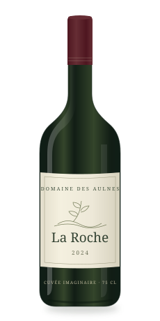
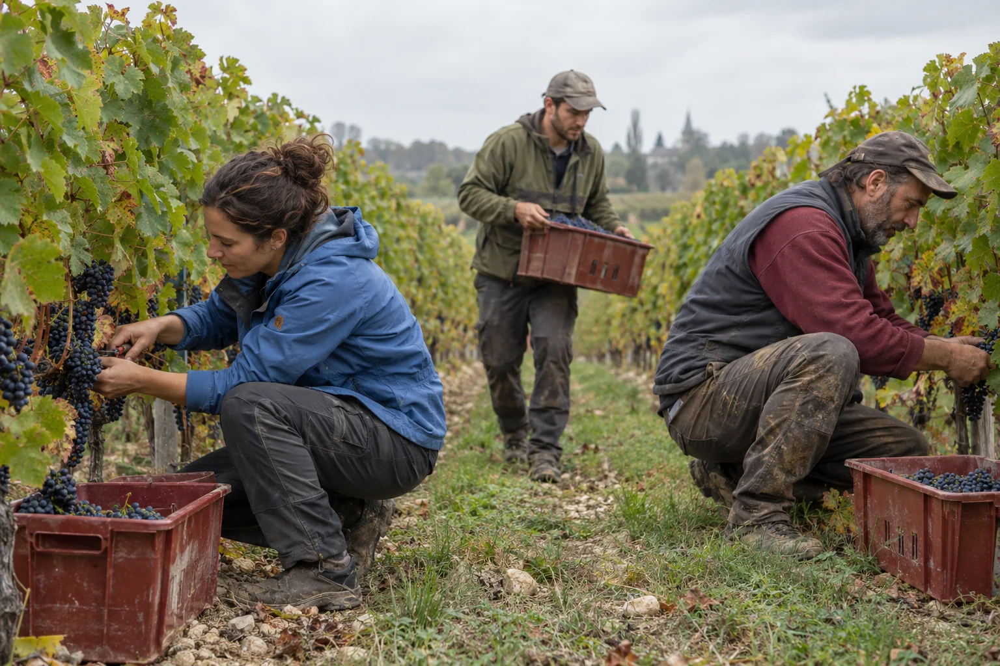
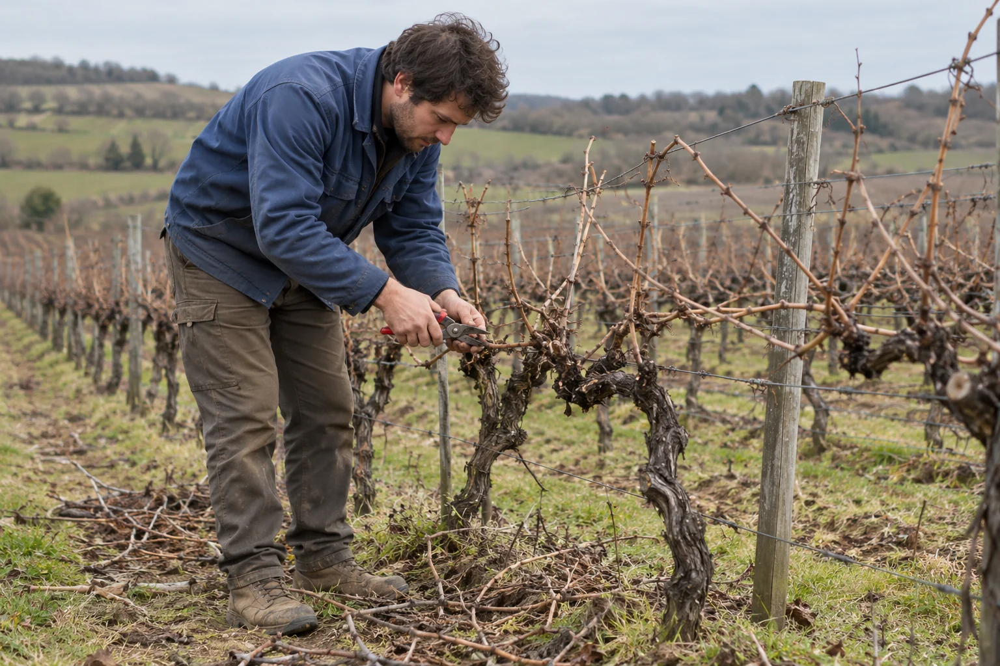
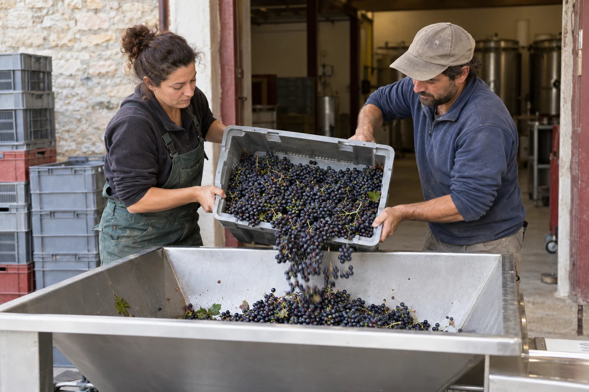
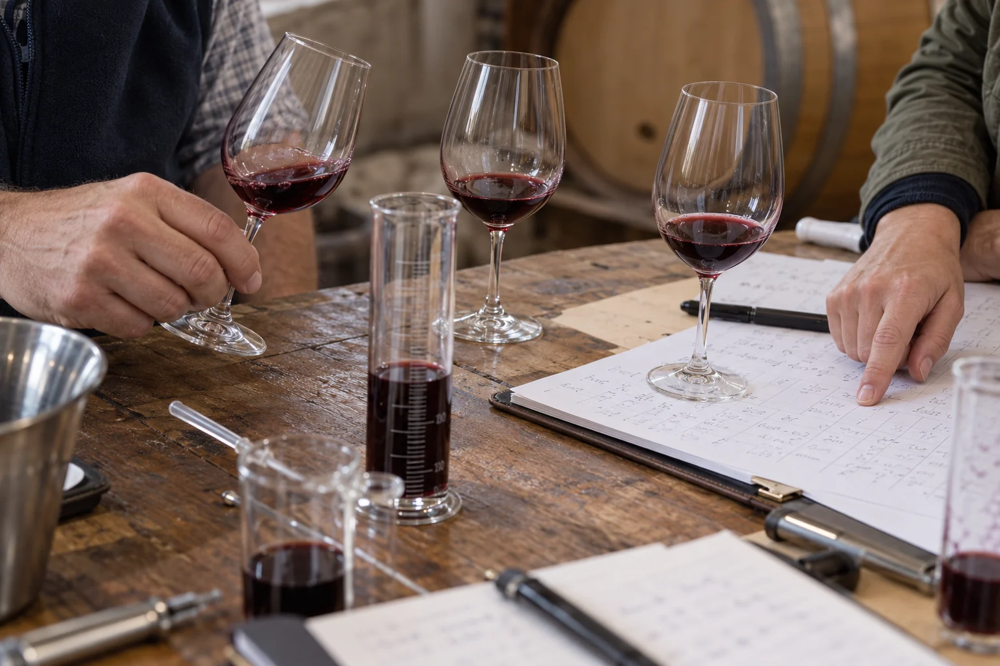
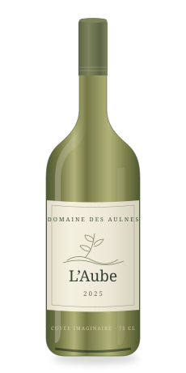

ROUGE · 2025 · 75 CL
La Roche
Le fruit et la tenue en bouche, cherchés ensemble.
Lire le chapitre de l’assemblage18 € TTC / bouteille
Vignes, vins
et vies ensemble.
LE CARNET D’UN MILLÉSIME
2025 2026
Avant la bouteille, il y a des jours de taille, un ciel qu’on surveille, une équipe à réunir. Et des choix qui se font rarement seul.
Suivre le millésimeUne année imaginée aux Aulnes.
Un exemple de ce que votre domaine pourrait raconter.

01
JANVIER — MARS 2025 · À LA VIGNE

Devant le même cep, deux personnes ne voient pas forcément la même chose.
On regarde le bois, la vigueur, ce qui a poussé l’année précédente. Puis on choisit. Dans cette année imaginée, la taille est aussi un moment de transmission : montrer une coupe, expliquer pourquoi, laisser l’autre essayer.
Le geste appartient à quelqu’un. Le travail se répartit, s’apprend et se discute.
L’équipe permanente prépare et suit les parcelles. Une personne qui apprend taille aux côtés d’une personne expérimentée.
02 / LE PRINTEMPS · OBSERVER
Une prévision ne dit pas encore ce qu’il faudra faire dans chaque rang.
DANS CE SCÉNARIO
Une pluie annoncée fait revoir l’ordre des travaux. On confronte le bulletin à ce qu’on voit sur place, puis aux moyens disponibles.
Ce qu’on observeL’état des sols, des feuilles et les prévisions.
Ce qu’on décideReporter un passage et réorganiser la journée.
Ce que cela engagePrévenir l’équipe et ajuster le travail suivant.
Aucun relevé météo réel ni aléa attribué à un domaine existant.
03
FIN D’ÉTÉ 2025 · CHOISIR LE MOMENT
Goûter les baies. Comparer les parcelles. Mettre des mots sur ce que l’on cherche.
Il faut choisir une date, mais aussi réunir les personnes et préparer la réception du raisin. L’envie d’attendre rencontre l’organisation du travail.
Dans ce récit, l’équipe échange ses observations ; la personne responsable du vin tranche. La décision n’efface ni les doutes, ni le travail qu’elle déclenche.
Puis tout s’accélère04 / SEPTEMBRE 2025 · LES VENDANGES
DE LA PARCELLE AU CHAI

Tout le monde ne vient
pour les mêmes raisons.
Pour certains, c’est le travail de l’année. Pour d’autres, un contrat de quelques jours. Il y a celles et ceux qui connaissent chaque rang, les nouveaux, les personnes qui réceptionnent au chai.
Le repas commun fait partie de la journée. Le salaire, les horaires et la répartition des tâches aussi. Raconter la récolte, c’est laisser une place à ces réalités.
DÉROULÉ IMAGINÉ · PAS UN RELEVÉ DE TRAVAIL
05
DE L’AUTOMNE 2025 AU PRINTEMPS 2026 · AU CHAI
Sur la table, plusieurs verres. Dans chacun, une possibilité.
Les lots ont leur histoire. On les goûte séparément, puis ensemble. Un essai apporte du fruit ; un autre tient mieux en bouche. On reprend, on compare, on laisse reposer.
La passion de l’assemblage peut se raconter dans ces essais : ce qui plaît, ce qui résiste, ce qu’on décide de garder. Pas seulement dans la formule finale.
EXEMPLE DE CARNET · NOTES IMAGINÉES
Ces notes illustrent une méthode de récit. Elles ne décrivent pas un vin commercialisé.

DE L’HISTOIRE AU VERRE
Deux cuvées imaginaires.
Chacune prolonge un chemin
que l’on vient de parcourir.

ROUGE · 2025 · 75 CL
Le fruit et la tenue en bouche, cherchés ensemble.
Lire le chapitre de l’assemblage18 € TTC / bouteille

BLANC · 2025 · 75 CL
Une fraîcheur qui commence au choix de la récolte.
Revenir au choix de la récolte16 € TTC / bouteille
Cuvées et prix fictifs. Panier de démonstration : aucun achat ni paiement.
06 / LE VIN S’OUVRE, LA CONVERSATION AUSSI
Venir au domaine, c’est pouvoir poser les questions qui restent.
Pourquoi cet assemblage ? Comment s’est passée la récolte ? Qui travaille ici ? Une visite peut reprendre le fil, du rang de vigne jusqu’au verre.
Balade & dégustation
1 h 30 · 18 € / adulte
Expérience et tarif fictifs · Réservation simulée
UNE CRÉATION MON CHAI
Un site pour les raconter, présenter vos vins
et donner envie de venir vous rencontrer.